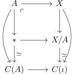
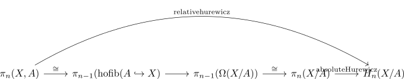
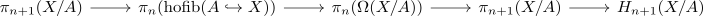
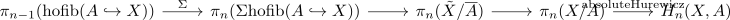
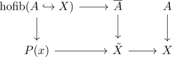
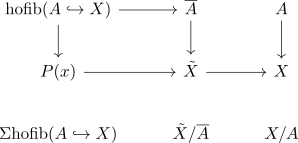
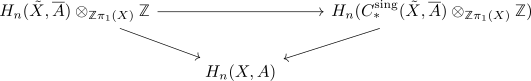

relative Hurewicz theorem
Proposition
Let $(X,A)$ be an n-1-connected pair of spaces for $n \geq 2$
1)
Assume that $A$ is 1-connected, then
is a group-isomorphism and
is a group-epimorphism
2)
If $A$ is a connected space, then
is an isomorphism
here $\pi_{n}(X,A) \otimes_{ \mathbb{Z} \pi_1(A)} \mathbb{Z}$ one has to think as quotienting the \(\pi_i1(A)\)- action
- i.e. quotient generated normal subgroup by $\gamma(h) \cdot h^{-1}$
- sort of abelianize wrt to pi_1(A)
- absolute case ~> conjugation as abelianization
Proof
1)
as in the absolute Hurewicz theorem we may assume that $(X,A)$ is a CW Pair with
Then consider the pushout

see:
- map from the mapping cone of a cofibration to the collapse as homotopy equivalence
- cone as pointed contractible space
Then it follows that
- $A \rightarrow *$ is \(2\)-connected (cf. connected space and connectivity of the terminal morphism)
- $\iota: A \rightarrow X$ is \(n-1\)-connected by assumption
Hence by homotopy excision theorem for CW complexes
is \(n\)-connected see:
Then we get

and

2)
a)
the relative hurewicz homomorphism is still induced by the following sequence

where $\tilde{X}$ is the universal cover and $\overline{A}$
here the maps are induced by the commutative diagram
\begin{displaymath}
\begin{tikzcd}
|[label={[label distance=-2mm]-45:\lrcorner}]|
\overline{A} \rar \dar & A \dar
\tilde{X} \rar & X
\end{tikzcd}
\end{displaymath}here by pullback and
and then

Then by passing to Cones up to homotopy equivalence

here $\iota: \overline{A} \rightarrow \tilde{X}$ is replaced by a cofibration (?)
For $n \geq 3$ it remains to show that $\pi_n(\tilde{X}/\overline{A}) \twoheadrightarrow \pi_n(X/A)$ surjects with
for $n \geq 3$ we have $\pi_1(A) \cong \pi_1(X)$
Note that $\pi_1(X) -> \overline{X}$ acts by deck transformation. Analogously $\pi_1(X) -> \overline{A}$ acts by <??> compatibly in the sense that $\iota$ is equivariant map
Thus it acts compatibly on the quotient $\tilde{X}/\overline{A}$ resp. the cone
This induces upon applying $\pi_n(-)$ the action on
recall that since $\tilde{X} \rightarrow X$ and $\overline{A} \rightarrow A$ are \(\pi_1\)-galois coverings
and $C_{*}^{\mathrm{sing}}(\overline{A}, \mathbb{Z})$ are $\mathbb{Z} \pi_1(X)$ chain complexes of free $\mathbb{Z} \pi_1(X)$ modules.
Then
as the left is a levelwise free \(\mathbb{Z}\pi_1(X)\)- chain complex
the chain now reduces to

here $(\tilde{X}, \overline{A})$ is \(n-1\) connected
Here the left is given by the the right + some tor part with , but
more generally Assume $R$ is a ring, $C \in \mathrm{Ch_*}(R)$ is a levelwise free chain complex of \(R\)-modules and $M$ an \(R\)-module. Suppose $H_k(C) = 0$ for $k < n$ (or C is \(n\)-connected - TODOO)
Thne we can construct a map
note for $n \geq 3$
The situation is slightly easier
- $\mathrm{hofib}(A \hookrightarrow X)$ is \(n-2)\) conncected
by freudenthal suspension theorem $\pi_{n-1}(\mathrm{hofib}(A \hookrightarrow X)) \rightarrow \pi_n(\Sigma \mathrm{hofib}(A \hookrightarrow X))$ is an isomorphism
The map $\pi_{n-1}(\mathrm{hofib}(A \hookrightarrow X)) \rightarrow \pi_{n}(\tilde{X}/\overline{A}) is satdied in case 1 as $\overline{A}$ si \(1\)-connected Here it is an isomorphism by 1)
by isomorphisms satisfy two out of six we conclued that $\Sigma$ is also an isomorphism
todo
todo: